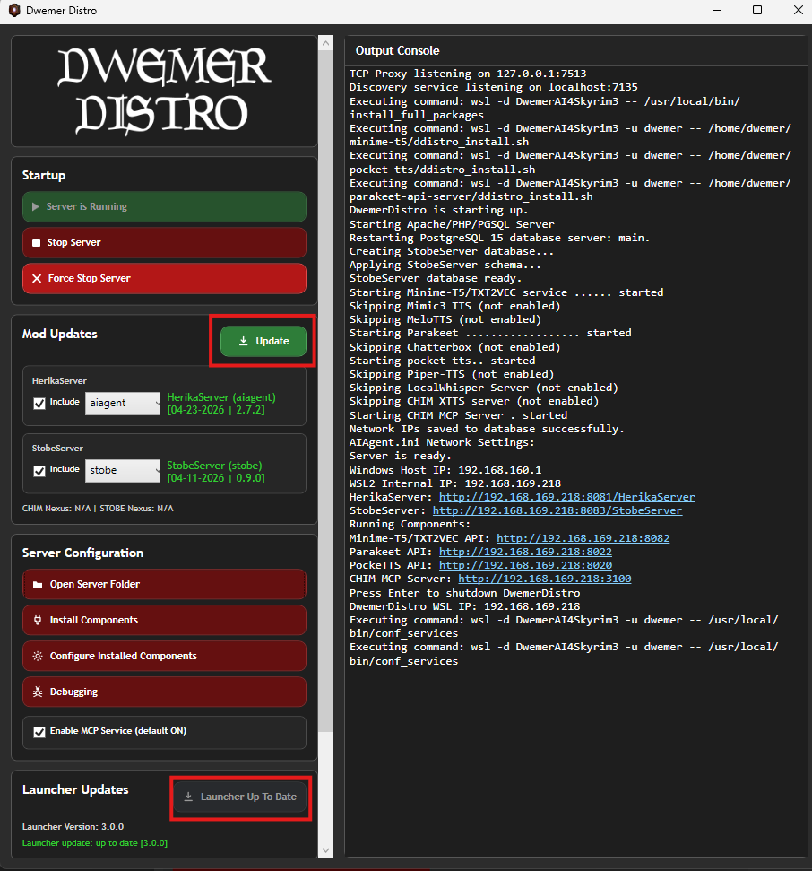
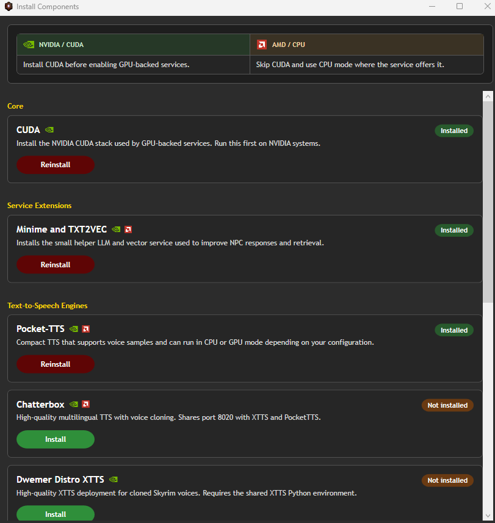
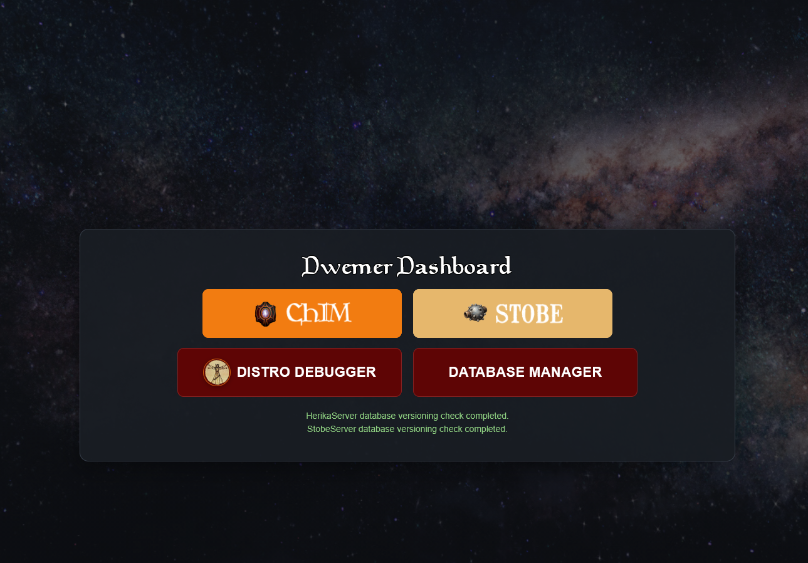
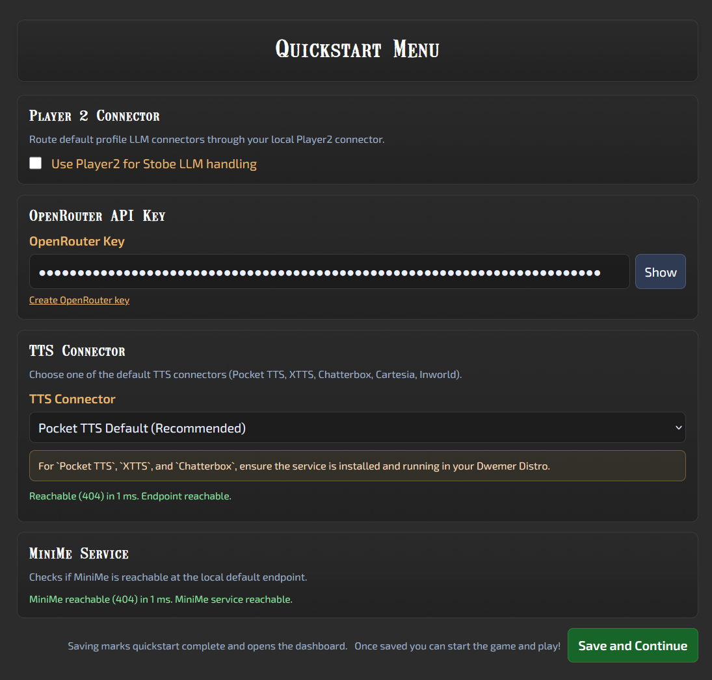

STOBE Installation
The installation process will assume you are using OpenRouter (LLM) ($5).
You will need to put $5 only into OpenRouter. Then generate an API key.
It is by far the easiest way to setup the mod for the first time!
You can use alternate AI services later once you get it working.
Installing DwemerDistro
- Ensure you have virtualization enabled in your PC BIOS menu (Here is a good guide if you are having issues).
- Open Control Panel - Programs and Features, and click Turn windows features on or off.

- Ensure you have Virtual Machine Platform, Windows Hypervisor Platform, and Windows Subsystem for Linux enabled.


- Restart your PC.
- Download the DwemerDistro from the mod page.

- Extract the
.exeanywhere on your PC. - Run the
DwemerDistroInstaller.exe. - Simply follow the installation guide and wait for it to finish.
- Leave Create desktop shortcut enabled, and click finish once it is complete.
- Run the
DwemerDistro.exeshortcut on your desktop.
Why does Windows Defender say it's a virus? Are you trying to hack me!
No we are not!
Most anti virus programs automatically untrust and false flag less popular
.exes.We have ALL the source code to the launcher on our Github. If you know Python you can compile it yourself!
- Click Update Launcher first.
- Wait for it to restart, then click Update.

- Under Install Components install any you wish to use.

Component Installation Guide:
- If you have a powerful NVIDIA GPU install CUDA, Minime&TXT2VEC (GPU) & Chatterbox.
- If you have a less powerful NVIDIA GPU install CUDA, Minime&TXT2VEC (GPU) & Pocket-TTS (GPU).
- If you have an AMD GPU, download Minime&TXT2VEC (CPU) & Pocket-TTS (CPU).
For Pocket TTS and Chatterbox you must setup a Hugging Face account and accept the terms of service for it here:
Pocket TTS: https://huggingface.co/kyutai/pocket-tts
Chatterbox: https://huggingface.co/ResembleAI/chatterbox

Access Token Creation. Make sure it has Read access!
- Once ready, click Start Server.
- Your default web browser should open a new tab taking you to the Dashboard.

STOBE Profile Setup
Fill out the QUICKSTART menu:
- Paste in your OpenRouter API key.
- Choose TTS.

- Click Save.
STOBE Mod Setup
DOWNLOAD AND INSTALL THESE REQUIRED MODS!
- RE_Kenshi
- KenshiLib
- Download the Stobe file in the downloads page.
- Install it with your mod manager of choice.
- Or manually place it within C:\Program Files (x86)\Steam\steamapps\common\Kenshi\mods.
- Now you are ready to play!
In-game Setup
- Ensure that DwemerDistro is running and start RE_KENSHI (DO NOT START REGULAR KENSHI).
- Ensure STOBE is enabled in the mod manager.
- Once in game (no newgame required) follow the popup message.
- Try talking to an NPC using the chat hotkey. You should get a response.
Well done, you have the mod installed!
READ ME
For updating the mod you usually only need to just click UPDATE in the DwemerDistro.exe and install the latest AIAgent mod from Nexus. You do not need to reinstall the DwemerDistro unless we explicitly say so.